Il disegno come giudizio:
rappresentare per verificare
In fase sintattica, il disegno non cerca: mette alla prova. Ogni rappresentazione diventa strumento critico che interroga la coerenza della forma emergente. Schizzi, diagrammi e modelli non illustrano un’idea: ne testano la tenuta, ne misurano le contraddizioni. Disegnare significa giudicare: far reagire la forma alla luce, ai vuoti, ai pesi, scoprendo ciò che regge e ciò che cede.
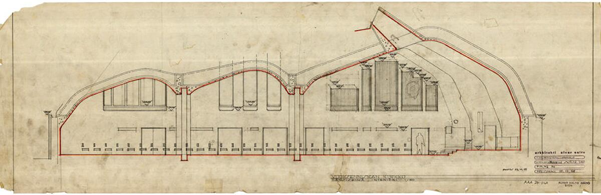
Negli schizzi per la Chiesa di Vuoksenniska, Aalto mostra in modo esemplare cosa significhi usare la rappresentazione come strumento di verifica e non come illustrazione. Ogni disegno è una prova: test di direzione, correzione dei volumi, verifica della luce radente sulla navata, tentativi successivi di ordinare un sistema complesso fatto di vuoti, piegature di copertura, differenze di quota e zone di concentrazione luminosa.
La forma non esiste in anticipo: emerge come esito di una serie di controlli, di aggiustamenti, di interrogazioni grafiche. Aalto utilizza schizzi sovrapposti, piante deformate, sezioni veloci e annotazioni intuitive per mettere alla prova la logica interna dello spazio. Ciò che cerca non è un’immagine compiuta, ma una struttura coerente, una sintassi capace di tenere insieme luce, materia e comportamento della navata.
In questo processo, il disegno diventa un laboratorio critico. La luce viene spostata e testata come fosse un materiale; le coperture vengono piegate e rialzate per verificare se il campo respira; la posizione degli ingressi è corretta più volte per controllare come la sequenza spaziale costruisca un climax percettivo. La rappresentazione non segue il progetto: lo fa nascere.
Gli schizzi di Aalto sono così uno dei migliori esempi del principio centrale della Lezione 8: la forma si costruisce attraverso le verifiche, non dopo. La sintassi dello spazio non è un sistema astratto, ma il risultato di un processo di giudizio continuo, in cui ogni segno grafico misura la necessità della forma e la sua capacità di diventare architettura.
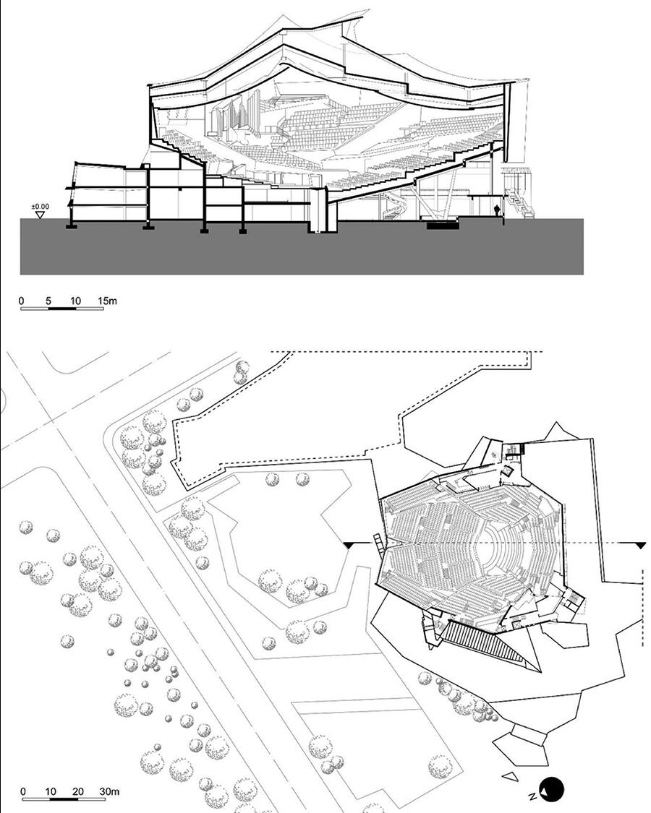
Gli schizzi e i diagrammi della Philharmonie di Berlino sono uno dei casi più emblematici di come la rappresentazione diventi lo strumento attraverso cui la forma prende corpo. Scharoun non disegna per immaginare un volume, ma per verificare una sintassi spaziale: capire come si genera un “campo” attorno alla musica, come il pubblico diventi morfologia, come il movimento produca la forma.
Nei primi schizzi, la sala non appare come un oggetto chiuso, ma come una costellazione di direzioni che convergono verso il podio centrale. La disposizione dei terrazzamenti nasce da una serie di diagrammi radiali e vettoriali: linee che testano la visibilità, gradienti che verificano la distanza acustica, pendenze che correggono la percezione del corpo nello spazio. È un pensiero relazionale, non figurativo.
La sezione, continuamente ridisegnata, diventa il vero luogo della verifica: Scharoun controlla come la copertura si pieghi per distribuire la luce, come le altezze varino per accompagnare l’intensità sonora, come il pubblico si organizzi in una struttura paesaggistica che avvolge l’orchestra. Ogni tratto di matita modifica il comportamento del campo, conferma o smentisce un principio, mette alla prova la logica interna della sala.
La Philharmonie di Berlino non emerge da un’immagine iconica, ma dalla coerenza progressiva di una serie di verifiche: la forma nasce perché le relazioni tengono, perché la sintassi funziona. Gli schizzi mostrano che l’architettura non è la ricerca di un “aspetto”, ma la costruzione di un sistema di reciproche dipendenze: luce, acustica, geometria, orientamento del corpo.
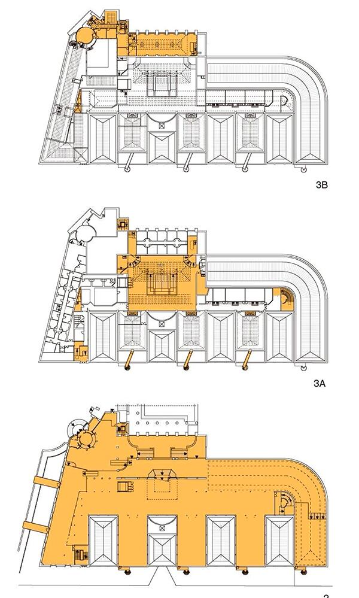
Il Palais de Tokyo – fase 2 di Lacaton & Vassal è uno dei casi più chiari in cui il disegno diventa un vero e proprio strumento di verifica critica, più che di definizione formale. L’intervento nasce da un principio radicale: non aggiungere, ma rivelare. Per farlo, gli architetti adottano un metodo che passa interamente attraverso la rappresentazione analitica del costruito.
I diagrammi di trasformazione non sono schemi illustrativi: sono dispositivi cognitivi che scompongono l’edificio nelle sue potenzialità operative. Attraverso sovrapposizioni, cancellazioni, gradienti, aperture e linee di forza, essi interrogano il manufatto esistente: dove la luce può entrare, dove il vuoto può estendersi, quali parti possono diventare permeabili, quali strutture nascondono risorse spaziali inutilizzate. È il disegno che decide il progetto, non il contrario.
La rappresentazione assume qui un ruolo eminentemente sintattico: verifica il comportamento dello spazio, esplora scenari, mette alla prova gradi diversi di trasformazione e liberazione. Quei diagrammi non propongono una forma nuova, ma rivelano come l’edificio possa funzionare diversamente, come il campo spaziale possa essere riattivato attraverso minime operazioni di apertura, demolizione selettiva o chiarificazione.
Lacaton & Vassal dimostrano che il progetto non nasce aggiungendo complessità, ma togliendo rumore: la forma emerge dall’evidenza delle relazioni interne, non da un gesto autoriale. Per questo il disegno è decisivo: non rappresenta l’edificio futuro, ma costruisce la logica della sua trasformazione. In Palais de Tokyo, la rappresentazione diventa il luogo in cui lo spazio si lascia leggere e, leggendo, si lascia reinventare.
La pianta come struttura logica del campo
La pianta è il banco di prova della logica spaziale. Non mostra un edificio, ma verifica relazioni: ordine, vuoti, gerarchie, direzioni. Ogni linea è una decisione strutturale. Se il campo tiene in pianta, la forma ha un fondamento. Altrimenti, cede come sistema. La pianta è una sintesi: non descrive, struttura.

La Saline Royale è uno dei casi più chiari in cui la pianta non rappresenta, ma organizza una visione del mondo. Ledoux costruisce un dispositivo geometrico — un grande emiciclo — che non serve a contenere edifici, ma a ordinare relazioni: tra centro e periferia, tra autorità e lavoro, tra vuoti produttivi e spazi collettivi.
Nella pianta si legge una logica potentissima:
- 1. Il vuoto come principio - Il grande spazio centrale non è un residuo: è il vero cuore del progetto. È il “campo operativo” che tiene insieme le parti, definendo gerarchie e orientamenti.
- 2. La forma come struttura sociale - La disposizione radiale degli edifici manifesta — prima in pianta, poi nello spazio — una visazione politica: il controllo panottico, la razionalizzazione del lavoro, la centralizzazione del potere. La pianta non è neutra: esprime una struttura relazionale.
- 3. La geometria come misura del comportamento - L’emiciclo, le tangenti, i raggi, gli allineamenti: tutto serve a rendere leggibile il sistema di forze che tiene insieme l’insediamento. Nella pianta l’ordine non è astratto: è già comportamento dello spazio.
- 4. La pianta come verifica della coerenza - Ledoux pone in pianta le condizioni che garantiscono coerenza al sistema:
- equilibrio dei pesi architettonici,
- continuità delle proporzioni,
- centralità del vuoto,
- riconoscibilità del campo indipendentemente dalle singole architetture.
La Saline Royale rende evidente che la pianta è la prima e più radicale forma di progetto. È qui che il campo prende ordine, che le relazioni si definiscono e che l’architettura “regge” o cede. Ledoux mostra che la pianta può essere idee costruita: un sistema coerente che anticipa l’identità dell’opera prima della sua forma tridimensionale.

Nell’Orfanotrofio di Amsterdam la pianta non è una figura da disegnare, ma un campo relazionale da costruire. Van Eyck abbandona l’idea moderna di edificio come oggetto unitario e sviluppa invece una costellazione di cellule, tutte diverse e tutte equivalenti, tessute attraverso corti, soglie, micro-piazze e passaggi coperti. È la pianta, più che qualsiasi altra rappresentazione, a rivelare la logica profonda dell’opera: non un organismo centralizzato, ma un sistema aperto, simmetrico solo per affinità, governato dal principio dell’intermediazione — tra grande e piccolo, tra dentro e fuori, tra collettivo e individuale.
Il carattere rivoluzionario del progetto sta proprio nella sua struttura di campo. Non esiste un centro unico: il centro “si sposta” continuamente, a seconda della posizione dell’osservatore. Le relazioni determinano i pesi dello spazio più dei muri, e le connessioni contano più delle stanze. La pianta mostra come la continuità non sia mai lineare, ma fatta di soglie successive, micro-espansioni, nodi irregolari che mantengono il senso di comunità senza mai comprimere l’individuo.
L’organizzazione modulare non produce ripetizione, ma variazione controllata: ogni cellula è simile ma non identica, ogni corte ha una propria luce, ogni giunto genera una possibilità. La pianta funziona come una grammatica dinamica, capace di integrare aggiunte, adattamenti, trasformazioni senza perdere identità. È un progetto che resiste al tempo perché non si fonda sulla forma esterna, ma sulla logica relazionale del campo, che rimane leggibile in ogni sua parte.
Per gli studenti, l’Orfanotrofio dimostra in modo esemplare che la pianta è il luogo in cui l’architettura viene giudicata: ordine, vuoti, sequenze e pesi emergono con precisione e rivelano la qualità profonda del progetto ben oltre qualsiasi prospetto o immagine costruita.
La pianta generale dell'Orfanotrofio di Amsterdam di Aldo van Eyck è un esempio fondamentale dello Strutturalismo olandese e del concetto di "in-between" (spazio intermedio), che realizza l'idea di un edificio come una piccola città e una casa come una città.

Nella École d’Architecture de Nantes, Lacaton & Vassal utilizzano la pianta come strumento critico per sovvertire l’idea tradizionale di edificio scolastico. La pianta non organizza funzioni, ma definisce un campo strutturale aperto, un sistema di vuoti, moduli e margini che permette una libertà d’uso radicale. Ciò che normalmente sarebbe risolto come sequenza di aule e corridoi diventa un’unica superficie continua, ritmata da una maglia portante che non impone gerarchie, ma supporta vari scenari possibili.
Il grande vuoto centrale — un piano intero senza partizioni — è il cuore del progetto: uno spazio libero che la pianta mostra nella sua forza concettuale prima ancora di rivelarsi nei volumi. In pianta, infatti, la struttura metallica, i vuoti, gli spessori e le soglie climatiche diventano immediatamente leggibili come un sistema logico, non come un insieme di ambienti. È nella pianta che emerge con chiarezza la visione dell’edificio come infrastruttura di progetto, non come contenitore programmatico.
L’organizzazione perimetrale dei blocchi più chiusi (studi, uffici, servizi), lasciando il centro completamente aperto, produce un campo spaziale reversibile, predisposto alla trasformazione continua. La pianta non descrive ciò che c’è, ma ciò che può accadere: è una piattaforma di possibilità, una matrice evolutiva. Anche il rapporto tra spazi interni ed esterni — terrazze, logge, superfici climatiche intermedie — appare chiarissimo proprio in pianta, dove la continuità del bordo dissolve il confine tra edificio e città.
In questo modo, Lacaton & Vassal mostrano come la pianta non sia un semplice disegno di distribuzione, ma un giudizio sulla struttura del campo: una presa di posizione teorica e progettuale che definisce la libertà d'uso come parametro primario. La pianta diventa così il luogo in cui l’architettura afferma la propria idea di spazio: aperto, trasformabile, non prescrittivo — un vero strumento critico della forma.
La sezione come rivelazione strutturale
La sezione non taglia: smaschera. Rivela l’architettura nel suo rapporto verticale con la luce, il suolo, le masse, le profondità. È la prova della tridimensionalità reale. Costringe il progetto a confrontarsi con la gravità, con l’esperienza del corpo, con la necessità dello spazio. Se la sezione è debole, la forma non regge.
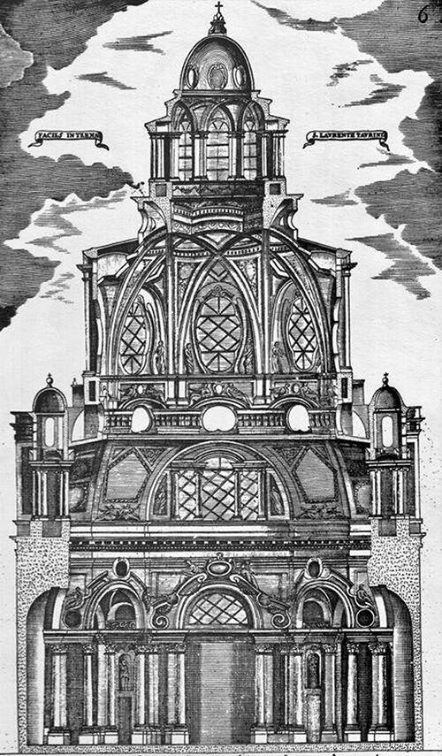
A San Lorenzo la sezione disvela l’ordine profondo dell’edificio: una macchina ascensionale in cui il passaggio da quadrato–ottagono–stella–oculo guida lo sguardo verso la lanterna. Non c’è una calotta unica, ma gusci sovrapposti e alleggeriti, cuciti da archi rampanti che intrecciandosi generano la trama stellare. La statica diventa figura; la figura, luce. Dai tagli verticali e dalle finestre occultate la luminosità sale per gradi, rimbalzando sulle superfici inclinate fino a smaterializzare la massa in prossimità della cupola.
La verticalità non è effetto scenografico, ma risultato di un sistema di tensioni geometriche che si intensifica salendo: il diametro si riduce, gli elementi si infittiscono, la luce si concentra nell’oculo. La sezione chiarisce anche il comportamento strutturale: gli archi in muratura ridistribuiscono le spinte e sostituiscono la tradizionale armatura lignea, consentendo una costruzione leggera e autoportante per l’epoca.
Dal punto di vista percettivo, la progressione dal basamento più ombroso alla lanterna luminosa organizza un percorso di rarefazione: la materia perde peso, lo spazio guadagna intensità. È un modello didattico esemplare su cosa significhi “giudicare in sezione”: comprendere come luce, forma e struttura coincidano e come solo il taglio verticale riesca a restituire il campo che la pianta non mostra—quello in cui l’architettura diventa tempo, profondità e necessità.
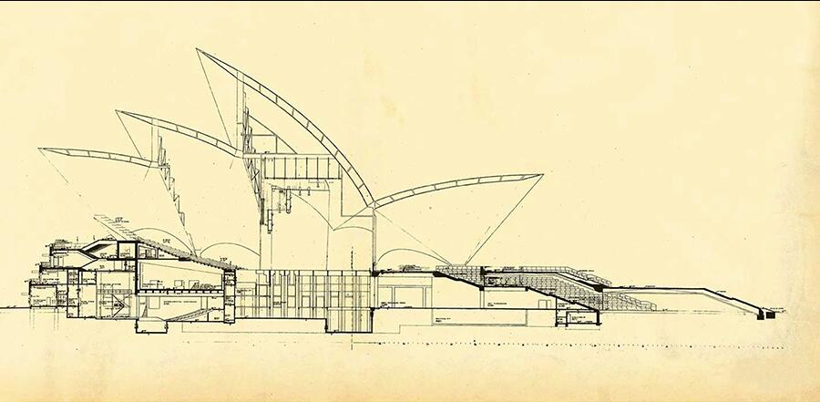
Alla Sydney Opera House la sezione non verifica: genera. Utzon individua una sola sfera ideale e ne ricava, per tagli successivi, tutte le superfici delle calotte. Da questa matrice unica discendono dimensioni, raggi, moduli e dettagli costruttivi: la forma non è un’immagine esterna ma l’esito di una legge geometrica che tiene insieme architettura, struttura e processo.
La sezione rende leggibile questa logica. Ogni vela è un arco di sfera composto da costole prefabbricate in calcestruzzo, montate in cantiere e post-tese: la regola sferica consente stampi standard, serialità, controllo delle tolleranze. La geometria diventa economia di cantiere e coerenza sintattica: cambiano scala e orientamento delle calotte, ma la famiglia formale resta stabile perché tutte “appartengono” alla stessa sfera.
Dal punto di vista percettivo, la sezione mostra anche il comportamento della luce: superfici inclinate e tagli netti riflettono il cielo e proiettano lo spazio verso l’esterno; all’interno, il diaframma strutturale separa l’involucro dalle sale, permettendo di governare acustica e impianti senza tradire la chiarezza dell’involucro.
Per la didattica, il valore è esemplare: la sezione qui è principio generativo e non solo controllo finale. In un unico disegno si condensano regola geometrica, statica, prefabbricazione, percezione luminosa. È la dimostrazione che l’identità di un’opera può nascere da una matrice semplice e necessaria, capace di produrre variazioni senza perdere coerenza.
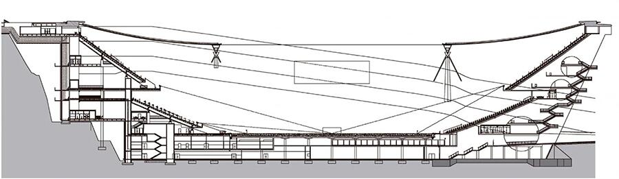
A Braga la sezione non descrive: istituisce l’architettura. Il progetto prende corpo come un taglio nella roccia del Monte do Castro: una tribuna incastonata nel fronte di cava e, di fronte, una gradonata artificiale; tra i due poli, il vuoto del campo. La montagna è parete, diaframma acustico, limite e paesaggio insieme; l’opera nasce per sottrazione, facendo della topografia la sua prima struttura.
Solo la sezione restituisce la logica di questo dispositivo: il contrasto fra il pieno geologico e l’arena scavata; l’orizzontalità sospesa della copertura, una rete di cavi ancorata a due grandi piedritti–torri e alle masse rocciose, che lascia liberi i lati corti e apre la vista sulla cava. La luce radente scorre sulle superfici di granito segate, rivelando la stratigrafia del sito, mentre il calcestruzzo regolare delle scale e dei diaframmi introduce una misura artificiale, misurata ma mai dominante.
Il percorso degli spettatori avviene in sezione: rampe e gallerie ipostile scorrono nel ventre della montagna, affiorando a quote diverse; la roccia guida, orienta, comprime e rilascia. Anche il bilancio materico è sezione: la massa estratta viene riutilizzata nel complesso, trasformando lo scavo in economia costruttiva e in scelta ambientale.
Per la didattica, Braga è un caso paradigmatico: la sezione come principio generativo che chiarisce struttura, percezione e paesaggio. Qui il progetto non aggiunge un oggetto al territorio: ne organizza le tensioni, convertendo un atto geologico in architettura necessaria.
L’assonometria come test della coerenza tridimensionale
L’assonometria unisce ciò che pianta e sezione separano. Verifica la tenuta del campo spaziale come organismo coerente. Gerarchie, flussi, connessioni, masse: tutto si mostra simultaneamente. È uno strumento sistemico, non figurativo. Serve a testare l’intero impianto formale, non a rappresentarlo.
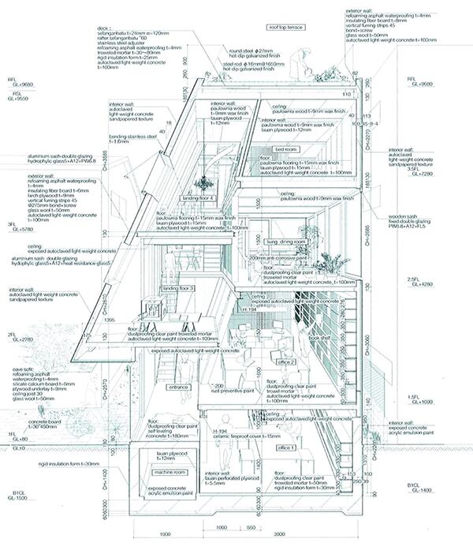
La House & Atelier Bow-Wow costituisce uno dei casi più efficaci per comprendere l’assonometria come strumento critico di verifica della coerenza tridimensionale del progetto.
Inserito in un micro-lotto di Tokyo, l’edificio nasce da una condizione estrema che obbliga gli architetti a concepire lo spazio non come sequenza di ambienti distinti, ma come un organismo tridimensionale continuo, in cui funzioni domestiche e professionali si intrecciano in un unico campo spaziale.
L’assonometria utilizzata da Bow-Wow non ha carattere figurativo o illustrativo: funziona come una vera e propria radiografia del sistema. Il disegno rende simultaneamente leggibili:
- la sovrapposizione dei livelli senza una gerarchia compositiva rigida;
- le connessioni verticali intese come dispositivi di orientamento spaziale, più che come semplici elementi distributivi;
- la densità volumetrica prodotta da nicchie, cavità, ripiani e piattaforme;
- l’interdipendenza tra spazi di servizio e spazi serviti;
- la permeabilità tra ambiti privati e professionali come parte di un unico campo percettivo.
La House & Atelier Bow-Wow diventa così un caso paradigmatico per la Lezione 8, in cui l’assonometria si configura come test della logica tridimensionale del progetto. Il disegno rende visibile la struttura nascosta dell’architettura, la sintassi delle relazioni e l’intelligenza spaziale che consente di tenere insieme un campo complesso all’interno di uno spazio estremamente ridotto.
L’assonometria non rappresenta l’edificio: lo smonta e lo ricompone come sistema coerente di relazioni.
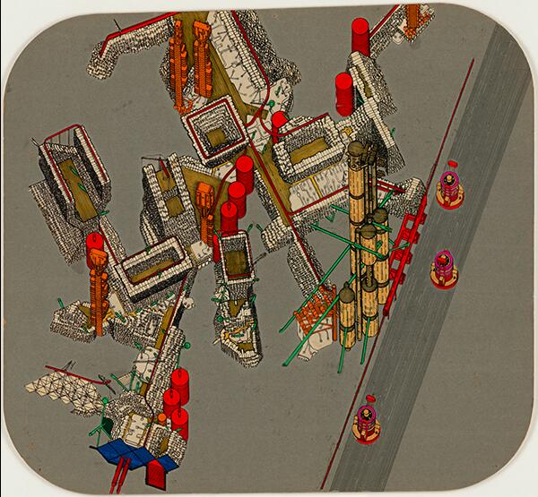
La Plug-In City di Archigram non è un progetto edilizio in senso convenzionale, ma un dispositivo concettuale che rende esplicito un principio fondamentale della progettazione contemporanea: l’architettura – e la città – come sistema di relazioni, non come somma di oggetti finiti.
L’assonometria non rappresenta una forma stabile, ma visualizza un campo complesso di componenti interdipendenti – capsule abitative, piattaforme, infrastrutture, nodi di servizio – la cui identità non risiede nella configurazione finale, bensì nella logica delle connessioni, delle sostituzioni e degli aggiornamenti possibili.
Il disegno assonometrico rende leggibile:
- una rete strutturale permanente che accoglie elementi temporanei;
- la variabilità di densità, posizione e aggregazione dei moduli;
- la reversibilità delle configurazioni come principio progettuale;
- la compresenza di flussi, infrastrutture e unità abitative in un unico campo operativo.
Dal punto di vista didattico, il progetto è centrale per la Lezione 8 perché chiarisce che la rappresentazione progettuale non deve descrivere oggetti, ma condizioni operative, interazioni e intensità. È la stessa logica che fonda la scheda sinottica: una mappa relazionale capace di mostrare come le variabili agiscono sul campo e ne modificano continuamente l’assetto.
In questo senso, Plug-In City anticipa una nozione di coerenza non formale ma sistemica: la stabilità del progetto non è nella forma, ma nella consistenza delle relazioni che ne governano la trasformazione.
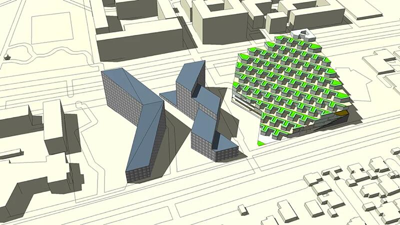
I Mountain Dwellings di BIG costituiscono uno dei casi contemporanei più chiari in cui l’assonometria non descrive un oggetto architettonico, ma rende leggibile un sistema complesso.
Il progetto combina due programmi radicalmente differenti — un’autorimessa di grandi dimensioni e un complesso residenziale — fondendoli in un unico organismo attraverso un dispositivo tipologico e spaziale preciso: una sezione in pendenza che trasforma l’edificio in una topografia artificiale abitata.
Nella rappresentazione assonometrica, la logica complessiva del progetto emerge con chiarezza. Il parcheggio si configura come una piattaforma infrastrutturale continua, modulare, assimilabile a un paesaggio tecnico sul quale si innesta il sistema residenziale. Gli alloggi si dispongono lungo una sequenza terrazzata che garantisce a ciascuna unità luce, affaccio e spazio aperto, trasformando una condizione infrastrutturale in un dispositivo abitativo.
L’edificio non può essere compreso come una semplice sovrapposizione di piani. È invece un sistema tridimensionale continuo, in cui topografia, percorsi, pendenze e flussi sono governati da un’unica logica generativa.
L’assonometria consente di verificare la coerenza interna di questo sistema: la continuità delle rampe, la relazione tra moduli strutturali e abitativi, l’organizzazione dei percorsi carrabili e pedonali, la costruzione simultanea di infrastruttura e paesaggio. Ciò che piante e sezioni isolate non riescono a restituire, l’assonometria lo rende evidente: il comportamento spaziale dell’edificio, la sua natura sistemica e la necessità delle sue relazioni interne.
Per la Lezione 8, i Mountain Dwellings sono esemplari perché mostrano come la forma architettonica non coincida con un volume, ma con una logica tridimensionale che si verifica pienamente solo attraverso l’assonometria. Il disegno rende visibile la struttura invisibile del progetto, il suo funzionamento e la sua coerenza.
La prospettiva come simulazione dell’esperienza
La prospettiva mette alla prova il progetto dal punto di vista del corpo. Movimento, profondità, tensioni percettive, variazioni di luce: tutto ciò che era previsto deve manifestarsi come esperienza concreta. È il momento in cui il disegno giudica la realtà dell’architettura.
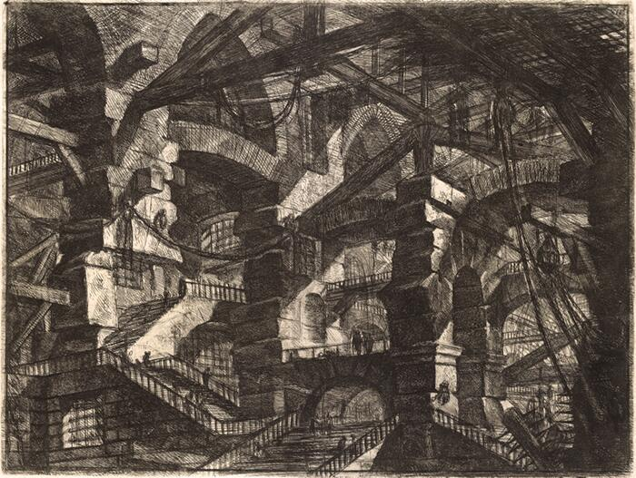
Le Carceri d’Invenzione di Giovanni Battista Piranesi non sono vedute architettoniche, ma veri e propri esperimenti percettivi. In queste incisioni la prospettiva non serve a ordinare lo spazio, bensì a metterlo in crisi, trasformandolo in un campo instabile di forze visive, tensioni e movimenti contraddittori.
Piranesi spinge il dispositivo prospettico oltre la sua funzione classica di chiarificazione. Lo spazio non si lascia mai comprendere in un unico colpo d’occhio: rampe che si incrociano senza logica apparente, scale che conducono a livelli inconciliabili, ponti sospesi che non stabiliscono un percorso univoco. Il movimento è suggerito dalla moltiplicazione dei cammini possibili, ma nessuno di essi conduce a una destinazione riconoscibile. La profondità non coincide con una distanza misurabile: diventa una forza che trascina l’occhio, lo disorienta, lo costringe a continui aggiustamenti percettivi.
La luce svolge un ruolo decisivo in questo processo. Fasci luminosi improvvisi illuminano porzioni limitate dello spazio, mentre vaste aree restano immerse nell’ombra. Il chiaroscuro non chiarisce la struttura dell’ambiente, ma ne amplifica l’ambiguità, suggerendo che ciò che è visibile è solo una parte di un organismo spaziale molto più esteso e inaccessibile. La prospettiva non costruisce un interno stabile, ma un ambiente che sembra espandersi indefinitamente oltre i limiti del foglio.
Per la scheda 8.5, le Carceri mostrano con estrema chiarezza che la prospettiva non è semplicemente uno strumento di rappresentazione, ma un mezzo di verifica dell’esperienza spaziale. Piranesi utilizza la prospettiva per testare cosa accade quando la logica dello spazio perde stabilità e diventa esperienza di movimento, tensione e profondità estrema. La prospettiva non spiega lo spazio: lo sottopone a una prova percettiva radicale.
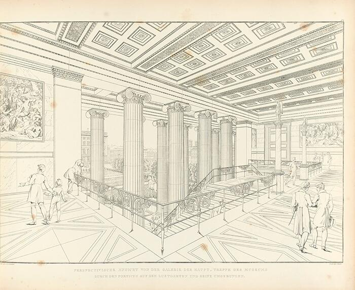
Nelle prospettive interne dell’Altes Museum, Karl Friedrich Schinkel utilizza la prospettiva come strumento di controllo e verifica dell’esperienza spaziale. A differenza della tradizione vedutistica o celebrativa, queste immagini non mirano a esaltare l’edificio, ma a testare la qualità percettiva dell’ordine classico che il progetto intende costruire.
La prospettiva consente di verificare la sequenza spaziale dall’ingresso alla rotonda centrale, mettendo in relazione assialità, simmetria e proporzione. Il percorso non è pensato come un semplice passaggio funzionale, ma come un’esperienza graduata: ogni avanzamento nello spazio produce una variazione controllata dei rapporti tra colonne, aperture, masse e luce. La profondità non è spettacolare né vertiginosa, ma misurata e leggibile, costruita attraverso la ripetizione ritmica degli elementi e la continuità degli assi visivi.
Un ruolo decisivo è svolto dalla luce naturale, in particolare quella zenitale della rotonda. La prospettiva permette di verificarne l’effetto non solo illuminotecnico, ma spaziale e simbolico: la luce non frammenta lo spazio, ma lo unifica, rafforzando la centralità e la chiarezza dell’impianto. L’illuminazione diventa parte integrante della costruzione percettiva dell’ordine, rendendo lo spazio comprensibile nel suo insieme e nei suoi dettagli.
In queste immagini la prospettiva non è un artificio scenografico, ma un dispositivo di controllo: serve a garantire che il sistema di relazioni — assi, campi visivi, proporzioni, direzioni — funzioni realmente nello spazio attraversato dal corpo. La rappresentazione anticipa e verifica l’esperienza del visitatore, assicurando che l’architettura mantenga coerenza tra forma, uso e percezione.
Per la scheda 8.5, Schinkel dimostra che la prospettiva può essere uno strumento rigoroso di verifica dell’esperienza: non mette in crisi lo spazio, come in Piranesi, ma ne controlla l’intelligibilità, trasformando l’ordine architettonico in esperienza percettiva stabile e condivisibile.
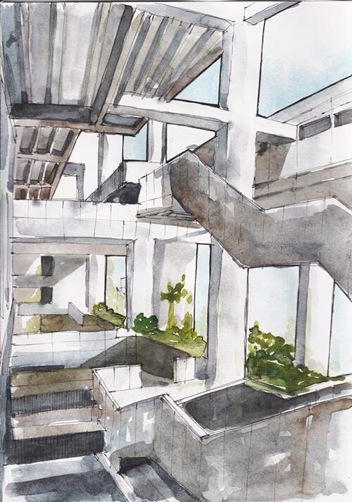
Le prospettive dei livelli-terrazza dell’UTEC di Lima non mostrano un edificio nel senso tradizionale, ma un paesaggio verticale costruito, concepito come una scogliera abitata. Grafton Architects utilizzano la prospettiva per verificare il comportamento del campo spaziale: non l’immagine della forma, ma il modo in cui luce, gravità, massa e movimento agiscono nello spazio reale.
L’edificio nasce come risposta diretta alla topografia della costa peruviana. La sezione non è un semplice dispositivo distributivo, ma il principio generativo dell’intero progetto. Le prospettive permettono di simulare l’esperienza della salita, dell’attraversamento e della sosta lungo una sequenza di terrazze, rampe e piattaforme che costruiscono una continuità tra suolo, edificio e orizzonte marino. La profondità non è frontale né centrata: è laterale, obliqua, atmosferica.
La luce gioca un ruolo decisivo in questa verifica. Non illumina in modo uniforme, ma scava lo spazio attraverso ombre profonde, contrasti netti e variazioni di intensità. Le grandi pareti in cemento non sono fondali neutri, ma masse che assorbono, riflettono e modulano la luce, rendendo percepibile il peso dello spazio e la sua scala. La prospettiva rende leggibile questa relazione dinamica tra pieno e vuoto, tra compressione e apertura.
Il movimento del corpo è il vero generatore dell’esperienza spaziale. Le rampe e i percorsi esterni non conducono semplicemente da un livello all’altro, ma costruiscono una sequenza di situazioni percettive: viste incorniciate, spazi di soglia, improvvise aperture verso il paesaggio urbano e naturale. Lo spazio si chiarisce solo nel tempo dell’attraversamento.
Per la scheda 8.5, l’UTEC dimostra che la prospettiva è uno strumento di verifica del comportamento della forma. Non rappresenta un oggetto compiuto, ma rende visibile come un sistema spaziale reagisce alla luce, alla gravità e al movimento, trasformando l’architettura in esperienza fisica e percettiva.